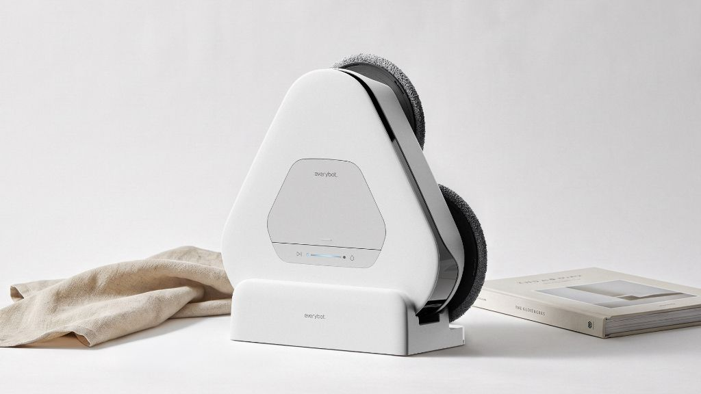
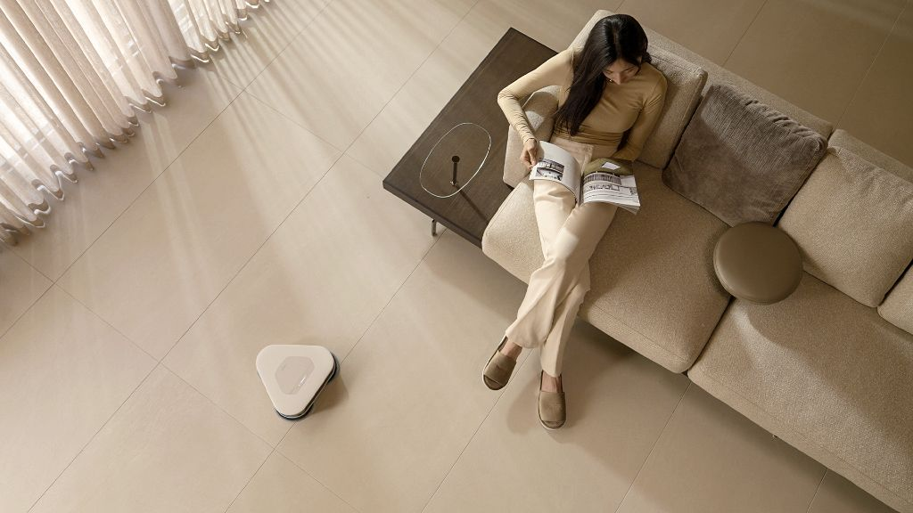

Threespin Slim.
물걸레 청소를 위한 가장 얇은 삼각형의 로봇. 집안의 모든 모서리까지 닿도록 설계된 에브리봇 TS450.

Fig. 01 — In Use가전이 아니라 가구처럼 머무를 수 있는 형태.
Threespin Slim (TS450)은 에브리봇의 신규 물걸레 청소로봇 라인의 플래그십입니다. 기존 원형 로봇청소기가 놓치던 벽면과 모서리를 확실히 닦기 위해 삼각형 실루엣을 선택했고, 거실 한복판에 놓여도 어색하지 않은 낮고 조용한 프로파일로 다듬었습니다.
바닥에 놓이는 물건은
얇을수록 예의 있다.
TS450의 높이는 거실 소파 아래로 지나갈 수 있는 최소값에서 출발했습니다. 내부 부품 배치를 처음부터 다시 설계해 두 개의 원형 물걸레와 배터리, 물통을 한 층에 나란히 눕혔고, 바깥에서 보이는 몸통은 한 장의 부드러운 판처럼 보이도록 다듬었습니다.
청소는 짧게, 존재감은
더 짧게.
국내 60가구의 사용성 관찰 결과, 사용자가 로봇청소기에 가장 자주 사용하는 표현은 “있는 줄 몰랐다” 였습니다. 우리는 이 문장을 역으로 목표로 삼았습니다 — 소음, 색, 조명, 자세, 도킹 방식까지 모든 신호가 주변에 스며드는 정도로 조정되었습니다.
결과적으로 TS450은 켜져 있을 때보다 꺼져 있을 때가 더 자연스러워 보이는 형태에 도달했습니다. 물걸레 두 장이 조용히 돌아가는 소리는 거실의 배경 소음과 구분되지 않으며, 도킹 후에는 하나의 오브제로 남습니다.
좋은 가전은
가전으로 보이지 않는다.
TS450은 2026 iF Design Award Gold와 Red Dot Design Award Winner를 수상하며, 물걸레 청소로봇 카테고리에서 형태·CMF·인터랙션 세 축을 가구의 문법으로 재정의한 사례로 평가받았습니다.